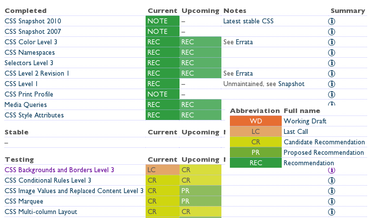

Proyecto de Software
Cursada 2014
Hoy seguimos con ...

Temario de Hoy
- GIT
- GitLab
- Repaso
- Hojas de Estilo
- CSS
- Validadores
Repaso - Arquitectura Web Básica
Repaso - W3C – El consorcio de la web
- http://www.w3c.org
- Desarrollo de estándares y guías.
La misión del W3C es:
Guiar la Web hacia su máximo potencial a través del desarrollo de protocolos y pautas que aseguren el crecimiento futuro de la Web.
Repaso . Tendencias ...

Repaso - Sobre aspectos de visualización
- El documento tiene una estructura y una forma de visualización
- Estructura: usando las etiquetas HTML más apropiadas.
- Visualización: usando hojas de estilo
- Ver sitio csszengarden
Algunos tips:
Escenciales:
- Chromium/Chrome: Consola -> F12
- Firefox: Firebug -> F12
Adicionales:
- Para Todos: Web developer
- Para Firefox: Tamper Data
Hojas de Estilo
- Describen el formato de un documento HTML. Cómo se visualizarán en los distintos medios, por ejemplo en la pantalla o en la impresora.
- Permiten separar el contenido de un documento HTML de la forma en que se lo visualizará
- El estándar usado: CSS (Cascading Style Sheets) (CSS 2.1 estándar css3 aún no)
- Es posible incluir las definiciones dentro de la página o en un archivo separado (a partir del HTML 4.0).
Las especificaciones
- Nivel 1: Año 1996 – Define las bases para la generación de las reglas de estilo. ¡Obsoleta!
- Nivel 2: Junio 2011 – 2.1 Recomendación W3C – Soporta media-specific style sheets y posicioamiento
- Nivel 3: Aún no estándar... pero soportado por muchos navegadores. Basado en 2.1. Definido por módulos. Muchos aún no son recomendaciones
CSS3 - estado actual
Hojas de Estilo
- Conjunto de reglas, que definen un estilo para cada elemento o grupos de elementos HTML.
- Una regla de estilo tiene dos partes:
- Un selector, que identifica el elemento o grupo al que el estilo se aplicará.
- Una declaración de propiedades a ser aplicadas al selector.
Hojas de Estilo (cont.)
Hojas de Estilo (cont.)
- Sintaxis:
selector { propiedad: valor; propiedad: valor... }
- Ejemplo:
H1 { color: black}
Para que se usan:
- Propiedades relativas a tipos de letra: font-family, font-size, font-weight, font-style
- Propiedades del texto: line-height, text-decoration, vertical-align, text-transform, text-align
- Propiedades de bloques: margin-top, margin-right, margin-bottom, margin-left, padding-top, padding-right, padding-bottom, padding-left, border-color, border-style
- Otras propiedades: color, background, display, list-style
Se asocian a través de:
- Atributo style sobre tag HTML
<etiqueta style=“prop1:valor1; prop2:valor2; ...”> </etiqueta>
- Etiqueta style
<style> selector {prop1:valor..}</style>
- Archivos externos
<link href=”estilo.css” rel=”stylesheet” type=”text/css”>
Escribiendo Reglas
- Para reducir el tamaño de las hojas de estilo, es posible agrupar los selectores en una lista separada por comas:
h1, h2, h3 { font-family: Arial}
- Comentarios entre /* */
h2 { color: yellow } /* Los subtítulos van en amarillo */
- Los estilos se “heredan”. Las propiedades definidas para un elemento se trasladan a los elementos que éste “encierra”.
body { color: blue; } h1 { color: red; } /* Todos azules menos los h1. */
CSS – Clases e identificadores
¿Qué pasa si queremos aplicar una misma regla a varios elementos de distinto tipo? Ejemplo: algunos párrafos y algunos encabezados en rojo y el resto en el color por defecto.
<style> .rojo { color: #FF0000} </style>
En la página:
<h1 class=“rojo”> Este encabezado es rojo</h1> <h1> Este encabezado tiene el color por defecto</h1> <p class=”rojo”>Este párrafo es rojo</p> <p>Este párrafo no</p>
CSS – Clases e identificadores
- El atributo class está definido para casi todos los elementos HTML. Se pueden definir clases específicas para un tipo de elemento o genéricas
- Ejemplo:
<style> p.rojo { color: #FF0000} .parrafoRojo { color: #FF0000} </style>
La última regla se puede aplicar a cualquier elemento, no sólo a elementos <p>
CSS – SeudoClases
- Seudoclases: Son agregadas por el browser, y referidas como "clases" por las reglas de estilo. Permiten diferenciar diferentes usos para un mismo elemento.
- Ejemplo Típico:
a:link { color: red } a:visited { color: blue }
CSS – SeudoClases
- Seudoelementos: Permiten referirse a porciones de los elementos reales.
- Ejemplo típico:
p:first-line { font-variant: small-caps } p:first-letter { font-size: 220%; float: left }
Identificadores - atributo id
<style> #destacado {color:red; padding: 2px; margin: 1em; border-style: dashed; line-height: 2.4em;} </style> …. <p> Este es un texto cualquiera </p> <p id=”destacado”> Este texto es especial </p> <p> Este también es cualquier texto</p>
HTML – Etiquetas div y span
- Se utilizan para aplicar estilos a uno o más elementos.
- ¿Cuál es la diferencia?
Elementos en línea o en bloque
- Algunos elementos en línea definidos por HTML: a, img, input, select, span, textarea.
- Algunos elementos de bloque definidos por HTML: blockquote, div, dl, form, h1, h2, h3, h4, h5, h6, ol, p, table, ul.
- Los siguientes elementos también se considera que son de bloque: dd, dt, li, tbody, td, tfoot, th, thead, tr.
- Los siguientes elementos pueden ser en línea y de bloque según las circunstancias: button, iframe, map, object, script.
Modelo de cajas
- Todos los elementos de un doc HTML se representan mediante cajas rectangulares.
- Cajas creadas por los elementos de línea y los elementos de bloque
Modelo de cajas
- Propiedad display: determina el tipo de caja.
- Algunos valores:
- block : se genera una caja de bloque principal
- inline-block: genera una caja de bloque, la cual fluye como una caja en línea
- inline: genera una o más cajas en línea
p {display: inline}
…
<p> El siguiente párrafo</p>
<p> continúa o salta de línea?</p>Sobre márgenes, bordes, etc
Modelo de cajas - Ejemplo

Modelo de cajas - Ejemplo
CSS – Posicionamiento
- Permite organizar el documento en bloques o cajas.
- Configurando algunas propiedades estos bloques pueden ocultarse o solaparse unos con otros.
- Muchos efectos se logran con programación.
- Usando Javascript por ejemplo
CSS – Posicionamiento

CSS – Posicionamiento
Esquemas de posicionamiento
- Flujo normal
- Posicionamiento relativo: En el modelo flotante, una caja se presenta primero de acuerdo al flujo normal, luego se saca del flujo normal y se mueve a la izquierda o derecha tanto como sea posible. El contenido puede fluir a lo largo del costado del flotante.
- Posicionamiento absoluto: En el modelo de posicionamiento absoluto, una caja es quitada completamente del flujo normal (no tiene ningún impacto sobre los hermanos siguientes) y se le asigna una posición con respecto al bloque de contención.
- Posicionamiento fixed: No aplican los scrolls, por ejemplo en impreso aparecerá el elemnto en todas las páginas
Esquemas de posicionamiento
Esquemas de posicionamiento
Flujo Normal
#externo { color: red } #interno { color: blue }
Flujo Relativo
#externo { position: relative; top: -12px; color: red } #interno { position: relative; top: 12px; color: blue }
Flujo Flotante
#externo { color: red } #interno { float: right; width: 130px; color: blue }
Flujo Absoluto
#externo {position: absolute;top: 200px; left: 200px; width: 200px; color: red;} #interno { color: blue }
Flujo Absoluto (2)
#externo { position: relative; color: red} #interno {position: absolute; top: 200px; left: -100px; height: 130px; width: 130px; color: blue;}
Estilos
- Define también otras propiedades de visualización que las verán en la práctica: fuentes, colores, cursor, etc.
- Permiten especificar cómo presentar el documento en diferentes medios: en la pantalla, en el papel, con un sintetizador de voz, con un dispositivo braille, etc.
@media print { body { font-size: 10pt } } @media screen { body { font-size: 13px } } @media screen, print { body { line-height: 1.2 } }
Estilos
Importante
- Utilizar los elementos HTML según el objetivo para lo que fueron creados.
- Ejemplo, no cambiemos los atributos de un elemento p para que sea un encabezado o un bloque inline.
Validadores
- Permiten verificar el cumplimientos de los estándares.
- La W3C provee algunos:
- Validador HTML: http://validator.w3.org/
- Validador de Hojas de Estilos: http://jigsaw.w3.org/css-validator/
- Unicorn http://code.w3.org/unicorn
Web responsive
- Definición: El diseño web adaptable o adaptativo, conocido por las siglas RWD (del inglés, Responsive Web Design) es una filosofía de diseño y desarrollo cuyo objetivo es adaptar la apariencia de las páginas web al dispositivo que se esté utilizando para visualizarla.
Fuente: wikipedia
Web responsive - Gráficamente
Se pueden hacer cosas como
- Importar el css si es para imprimir en superficies mayores a 25cm
<link rel="stylesheet" media="print and (min-width: 25cm)" href="http://…" />
- Definir en el css algo aplicable solo a screen entre 400 y 700 pixeles
@media screen and (min-width: 400px) and (max-width: 700px) { … }
Frameworks Web responsive
Referencias CSS
- Tutorial básico CSS
- CSS en la W3C
- Algunos Libros en la web:
Mas referencias útiles
- Try it yourself online:
- Sobre HTML5
- http://diveintohtml5.info/ (Para aprender)
- http://www.html5rocks.com/en/ (Para ejemplos y práctica)